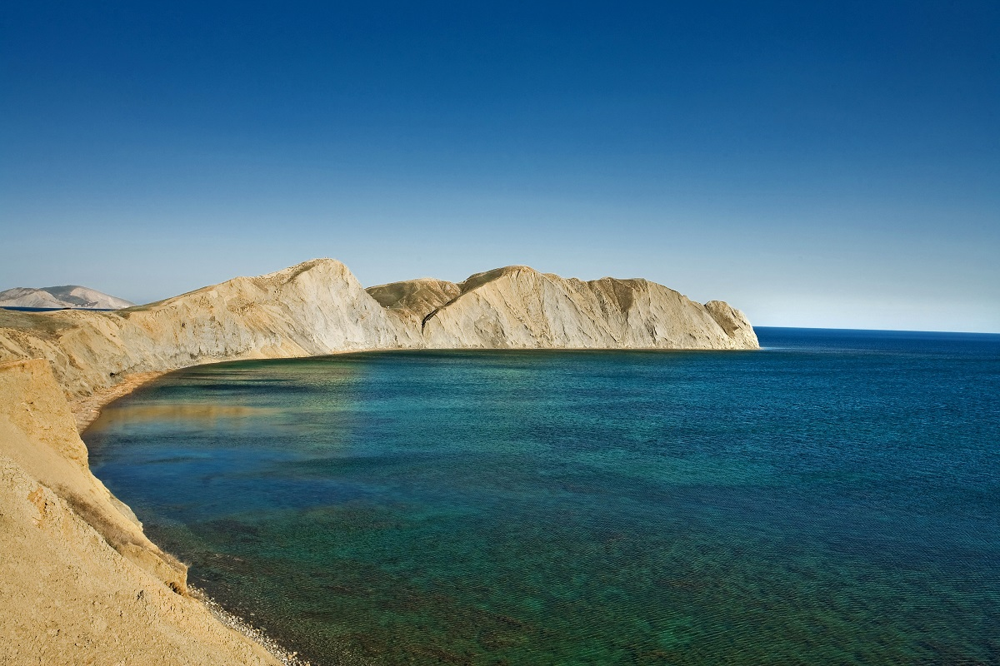

Долина привидений
План маршрута
1 день
Красная тропа. Чатыр Даг, пещера Эмине Баир Хосар.
Собираемся на Симферопольском жд вокзале к 11ти утра, распределяем продукты по участникам,
оттуда переезжаем в Сосновку, где и начинается сам маршрут. Предстоит не самый простой подъем на
нижнее плато Чатыр Дага по Красной тропе. Вначале обычно никто не может поверить что через пару часов
уже все будем там. Наверху же вдоволь отдохнем и перекусим. Еще немного и мы у Точки, так называется
место нашей стоянки. Плато Чатырдага безводное, поэтому Точка одно из немногих мест, где можно стать на
ночлег. А дальше — оставим вещи и пойдем знакомиться с оборудованной пещерой “Эмине Баир Хосар”. Кто будет
не в силах двигаться — можно больше никуда не идти в этот день.


2 день
Верхнее плато Чатыр Дага. Вершина Ангар бурун 1453 м.
Сегодня мы совершим переход от нижнего плато Чатыр дага к верхнему. По пути встретим множество пещер,
некоторые из них доступны без специального снаряжения, но в основном это вертикальные колодцы… Потратив
около двух часов на штурм вершины Ангар бурун мы бескрайне будем удивлены тем просторам и безграничной красоте
пейзажей открывшимся нам внезапно в награду за преодоление. Еще не видел я ни одного человека не испытывавшего
благоговение перед этой красотой горных хребтов и огромного Черного моря. Если будет время сможем покорить еще
одну вершину Эклизи бурун 1527 м. Но, пора спускаться, спуск, кстати, не легче чем подъем, как многие думают.
На ночлег станем на уютной андрюхиной поляне в тени леса.


3 день
Долина привидений. Вершина Южный Демерджи 1239 м.
Сегодня гвоздь программы — Долина привидений. Видимо когда то кто то ошибся назвав ее именно долиной, ибо по
этой “долине” мы будем подыматься весь день, шаг за шагом преодолевая 600 метров высоты. Привидения здесь —
причудливые каменные изваяния образовавшиеся вследствии выветривания нестойкой горной породы, конгломерата. Когда
то здесь было море — теперь горы с самыми причудливыми формами напоминающими людей, животных и прочих сущностей
(привидений). А после покорения южной Демерджи 1239 м. мы станем на ночлег у небольшого озерца Джурла, где и
позагораем.
4 день
Водопад Джур джур. Хапхальское ущелье. Ай Алексий.
С каждым новым днем еды становится все меньше, а рюкзаки все легче и легче. А это значит что сегодня мы будем
идти больше чем вчера. Преодолев очередное плато, на сей раз Северного Демерджи, мы выйдем к обрывам Хапхальского
ущелья. Здесь есть что фотографировать, сделаем привал минут на 20. А дальше — головокружительный спуск сквозь
дебри Хапхальского ущелья на встречу к водопаду Джур джур. И перед водопадом нас ждет сюрприз в виде ванны молодости,
коих в Крыму не мало. Но как же приятно, спустя несколько тяжелых дней, искупаться в ледяной воде. Бодрит! Ну а после
водопадов и купаний нам еще нужно пройти к стоянке Ай Алексий, где мы и заночуем без задних ног.
5 день
Низовья Чигенитры. Озеро Хун.
Основные достопримечательности пройдены. Нам осталось лишь пройти под южными обрывами Караби и насладится более
дикими пейзажами. Через перевал Ликон, мы выйдем к старой дороге под Чигенитрой и потихоньку дотопаем до огромного
озера среди бескрайних виноградников. Там же и заночуем. Сегодня купаться можно весь вечер, вода в озере очень теплая
:) Захватите с собой шампунь и чистые вещи, завтра вы сможете вернуться в цивилизацию приятно пахнущими :)
6 день
Через виноградники к морю…
Но как бы не было хорошо у теплого озера а все же нам пора прощаться и остаток дня мы пройдем среди все тех же,
уже успевших надоесть, виноградников. Здесь растет Киш Миш (без косточек), Кардинал, Молдова и многие другие сорта.
А, ну да, это только осенью… А в остальное время года мы просто будем спешить к морю…

Карта маршрута
План маршрута
1 день
Красная тропа. Чатыр Даг, пещера Эмине Баир Хосар.
Собираемся на Симферопольском жд вокзале к 11ти утра, распределяем продукты по участникам, оттуда переезжаем в Сосновку, где и начинается сам маршрут. Предстоит не самый простой подъем на нижнее плато Чатыр Дага по Красной тропе. Вначале обычно никто не может поверить что через пару часов уже все будем там. Наверху же вдоволь отдохнем и перекусим. Еще немного и мы у Точки, так называется место нашей стоянки. Плато Чатырдага безводное, поэтому Точка одно из немногих мест, где можно стать на ночлег. А дальше — оставим вещи и пойдем знакомиться с оборудованной пещерой “Эмине Баир Хосар”. Кто будет не в силах двигаться — можно больше никуда не идти в этот день.
2 день
Верхнее плато Чатыр Дага. Вершина Ангар бурун 1453 м.
Сегодня мы совершим переход от нижнего плато Чатыр дага к верхнему. По пути встретим множество пещер, некоторые из них доступны без специального снаряжения, но в основном это вертикальные колодцы… Потратив около двух часов на штурм вершины Ангар бурун мы бескрайне будем удивлены тем просторам и безграничной красоте пейзажей открывшимся нам внезапно в награду за преодоление. Еще не видел я ни одного человека не испытывавшего благоговение перед этой красотой горных хребтов и огромного Черного моря. Если будет время сможем покорить еще одну вершину Эклизи бурун 1527 м. Но, пора спускаться, спуск, кстати, не легче чем подъем, как многие думают. На ночлег станем на уютной андрюхиной поляне в тени леса.
3 день
Долина привидений. Вершина Южный Демерджи 1239 м.
Сегодня гвоздь программы — Долина привидений. Видимо когда то кто то ошибся назвав ее именно долиной, ибо по этой “долине” мы будем подыматься весь день, шаг за шагом преодолевая 600 метров высоты. Привидения здесь — причудливые каменные изваяния образовавшиеся вследствии выветривания нестойкой горной породы, конгломерата. Когда то здесь было море — теперь горы с самыми причудливыми формами напоминающими людей, животных и прочих сущностей (привидений). А после покорения южной Демерджи 1239 м. мы станем на ночлег у небольшого озерца Джурла, где и позагораем.
4 день
Водопад Джур джур. Хапхальское ущелье. Ай Алексий.
С каждым новым днем еды становится все меньше, а рюкзаки все легче и легче. А это значит что сегодня мы будем идти больше чем вчера. Преодолев очередное плато, на сей раз Северного Демерджи, мы выйдем к обрывам Хапхальского ущелья. Здесь есть что фотографировать, сделаем привал минут на 20. А дальше — головокружительный спуск сквозь дебри Хапхальского ущелья на встречу к водопаду Джур джур. И перед водопадом нас ждет сюрприз в виде ванны молодости, коих в Крыму не мало. Но как же приятно, спустя несколько тяжелых дней, искупаться в ледяной воде. Бодрит! Ну а после водопадов и купаний нам еще нужно пройти к стоянке Ай Алексий, где мы и заночуем без задних ног.
5 день
Низовья Чигенитры. Озеро Хун.
Основные достопримечательности пройдены. Нам осталось лишь пройти под южными обрывами Караби и насладится более дикими пейзажами. Через перевал Ликон, мы выйдем к старой дороге под Чигенитрой и потихоньку дотопаем до огромного озера среди бескрайних виноградников. Там же и заночуем. Сегодня купаться можно весь вечер, вода в озере очень теплая :) Захватите с собой шампунь и чистые вещи, завтра вы сможете вернуться в цивилизацию приятно пахнущими :)
6 день
Через виноградники к морю…
Но как бы не было хорошо у теплого озера а все же нам пора прощаться и остаток дня мы пройдем среди все тех же, уже успевших надоесть, виноградников. Здесь растет Киш Миш (без косточек), Кардинал, Молдова и многие другие сорта. А, ну да, это только осенью… А в остальное время года мы просто будем спешить к морю…